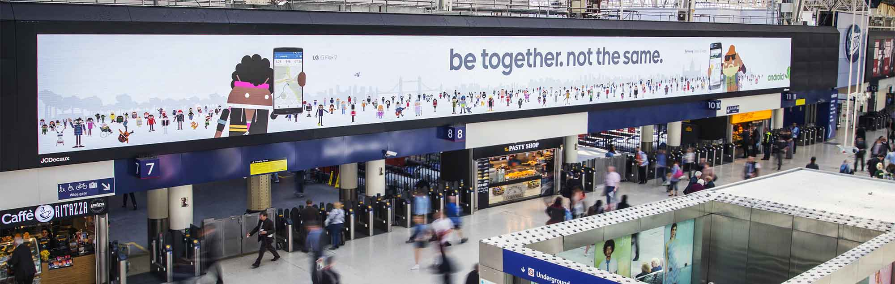

The Runtastic app lets you easily track your runs and fitness activities. With over 95 million users, it’s the most popular running app for smartphones, as well as being the best-selling app overall in multiple countries.
Company
Runtastic
Timeframe
Sep 2014–Dec 2015
My role and the team
Running ahead of the competition
Health and fitness is an extremely competitive space for mobile apps. In a team of four, I was one of the two designers who mostly focused on the Android version of Runtastic. I was also involved in cross-platform user research and user experience discussions, as well as producing designs for A/B testing on iOS and assets like icons and illustrations. We were constantly working on the Runtastic app to further refine the UX and polish the UI, to keep the app an industry leader.
Kudos
Award-winning design
Shortly after I started working at Runtastic, the company launched the Material Design overhaul of the flagship app. In the following months, we received some feedback from Google and I took the responsibility of redesigning some of the screens as well as designing some news ones. The newly introduced running leaderboard, for example, added an important social element that significantly increased user engagement.
The running leaderboard lets users compare with their friends to know who is running the longest distance
Following these updates, the Runtastic app for Android was included in the Editor’s choice collection and was one of the 15 apps included in the Material Design Showcase at Google I/O 2015.
Runtastic was included in the Material Design Showcase at Google I/O 2015 (bottom left) and is the top health and fitness app in many markets (right).
Icons and illustrations
Finding a consistent voice
Runtastic’s imagery was quite inconsistent when I joined the company. During my time there I produced many illustrations, mostly to be used in the apps, and I led the team effort to find a new style that could be easily used by everyone in the team in a consistent way.
Some in-app illustrations I produced for the Runtastic app.This tileable pattern for backgrounds was one of the distinctive elements of the new illustration style.
In addition to this, I also designed the next evolution of the Runtastic icon set, optimizing the icons on the pixel grid and using consistent visual traits across over 100 icons.
Some icons from the old set (top) compared with icons from the redesigned set (bottom). The new icons are simpler and more consistent.All the icons from the redesigned set are based on a 48px grid and share common visual traits.
Important featurings
More love from Google and Facebook
In the Spring of 2015 Google UK launched a campaign for Android with the slogan “Be together. Not the same.” Runtastic had a huge featuring in this, and I worked to provide assets for printed billboards, Android.com, promotional videos, and more.
A screenshot of Android.com featuring the Runtastic app in 2015.

Android billboards featuring the Runtastic app in London in 2015. Photo: Google.
The Runtastic app was also featured in the “Build better” video series by Facebook, for the F8 conference in 2015. The video tells the story of rapper Masta Ace, and shows how Runtastic is part of his life and the lives of many other people around the world.